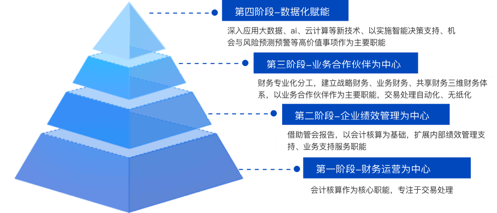
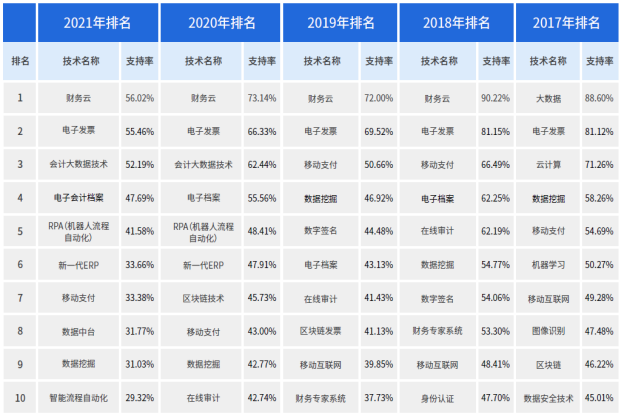

传统合并报表工作困境
- 技术驱动财务管理转型
- 数据驱动财务精益管理
- 平台驱动财务数智应用

-
技术驱动财务管理转型
-
随着社会发展、管理科学及技术发展，财务职能需逐步实现由核算型向管控型、精益型、价值型转变
推动财务管理从账房先生的角色转为“战略家、管控家、推动者和运营者”

-
数据驱动财务精益管理
-
拉通企业内外部、业务前后端数据，实现预算、资金、成本、风险等全价值链管控，数据赋能业务，流程驱动向数据驱动转变
重塑新型财务能力，逐步提升财务管控力、洞察力和分析决策能力

-
平台驱动财务数智应用
-
新技术的应用，创新了财务支撑工具，促进财务人员向数据分析师、数据科学家转变
借助中台化思路，合理规划业务中台、数据中台、AI中台、技术中台等一体化架构，统筹构建数智化应用，改变传统多应用系统、多业务入口的情况